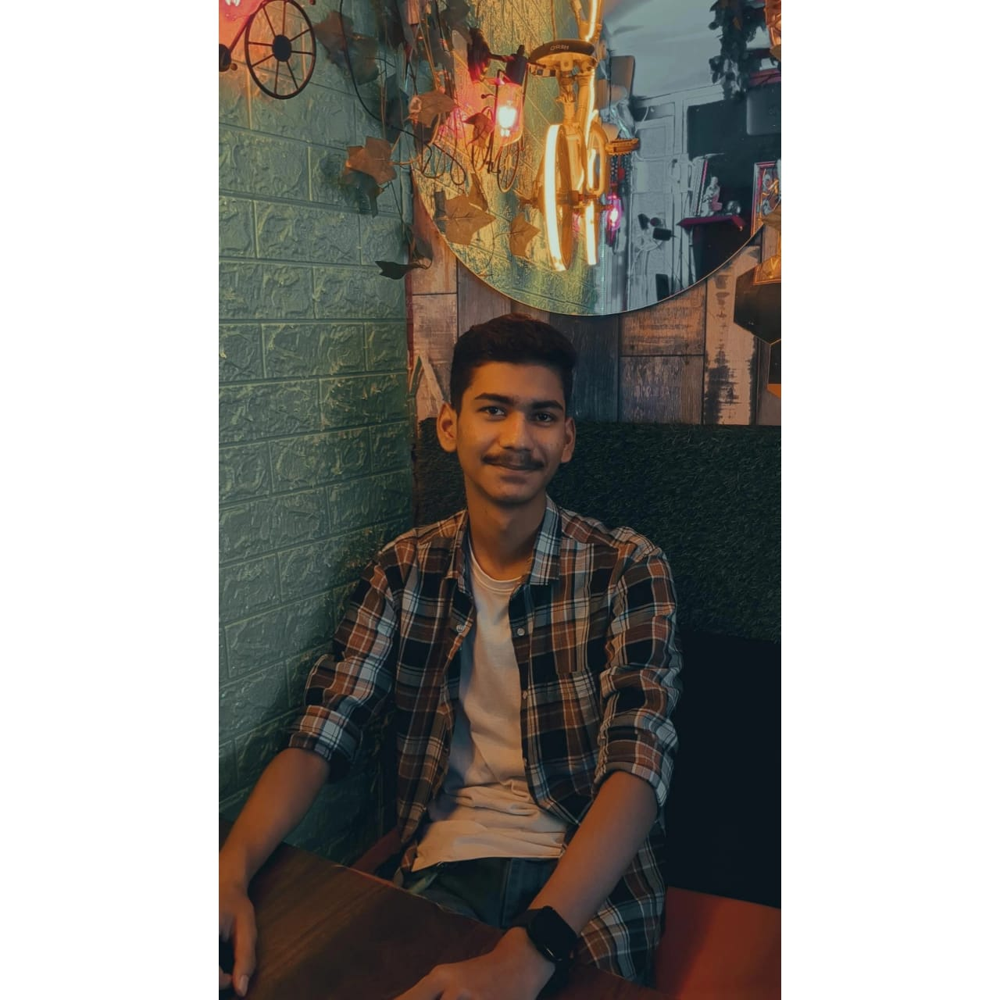

Helping communities see what’s coming. AI-powered flood prediction that turns satellite imagery into actionable inundation maps.
Next.jsDjangoU-NetGoogle Maps
Behind the build
Built a U-Net model to predict flood extent from satellite data, achieving an 88%+ Dice coefficient compared with HEC-RAS and reducing inference time by 95%.
The Django and Next.js application visualizes predictions with Google Maps, with model inference in 10 milliseconds. The project received a ₹10 lakh grant under the Yukti Innovation Challenge.
A closer look at the heartbeat. A portable, AI-powered ECG system connecting custom hardware with live waveform visualization.
Embedded systemsSignal processingCNN–LSTM
Behind the build
Designed a custom PCB around an ATmega328P microcontroller and a mobile app for USB signal acquisition and live ECG visualization.
Implemented Pan–Tompkins signal processing with 5–15 Hz bandpass filtering and adaptive thresholding to detect R-peaks and QRS complexes. Integrated a remotely hosted CNN–LSTM model for ECG classification.
Developed REST integrations and payment services supporting $200M+ in monthly transactions and up to 500 payments per run, with bounded retries and state reconciliation.
BACKEND / REST APIs / PAYMENTS
02
Less waiting. More doing.
Reworked SQL joins, filtering, and pagination to reduce load time by 80% and eliminate timeouts across datasets exceeding one million records.
SQL / PERFORMANCE / SCALE
03
Confidence in every release.
Automated 1,400+ API and UI regression tests with Jasmine and Playwright, integrated into TeamCity. Cut release validation from one week to eight hours.
AUTOMATION / CI/CD / QUALITY
04
From complex rules to working systems.
Built Java payroll services for 600+ tax jurisdictions and SOAP integrations for new-hire reporting serving 40,000+ customers. Created three AI agent skills that reduced manual QA effort by 50%.
JAVA / SOAP / AI-ASSISTED ENGINEERING
03 / THE PERSON BEHIND THE CODEALWAYS A WORK IN PROGRESS

HELLO, WORLD.
STAY curious.
Curiosity is the common thread.
I’m a software engineer who enjoys taking things apart, understanding how they work, and putting them back together a little better.
My path started with Electrical Engineering at NIT Silchar. It took me through flood prediction, custom ECG hardware, and national hackathons — and into enterprise software at Oracle NetSuite.
Whether I’m making a slow query faster or connecting an AI model to a real-world problem, I care about the same thing: building something useful, and building it well.
National Institute of Technology, Silchar
B.Tech, Electrical Engineering · 2020 – 2024
8.72 / 10 CGPA
A versatile toolkit. One builder’s mindset.
The technologies I use to connect the dots.
01 /
Languages
JavaTypeScriptJavaScriptPythonSQL
02 /
Backend & data
Spring BootREST & SOAPSuiteScriptNode.jsDjangoOracle SQLPL/SQLPostgreSQLMongoDB
 PROJECT CONCEPT / GIS + AI SIH 2023 WINNER
PROJECT CONCEPT / GIS + AI SIH 2023 WINNER